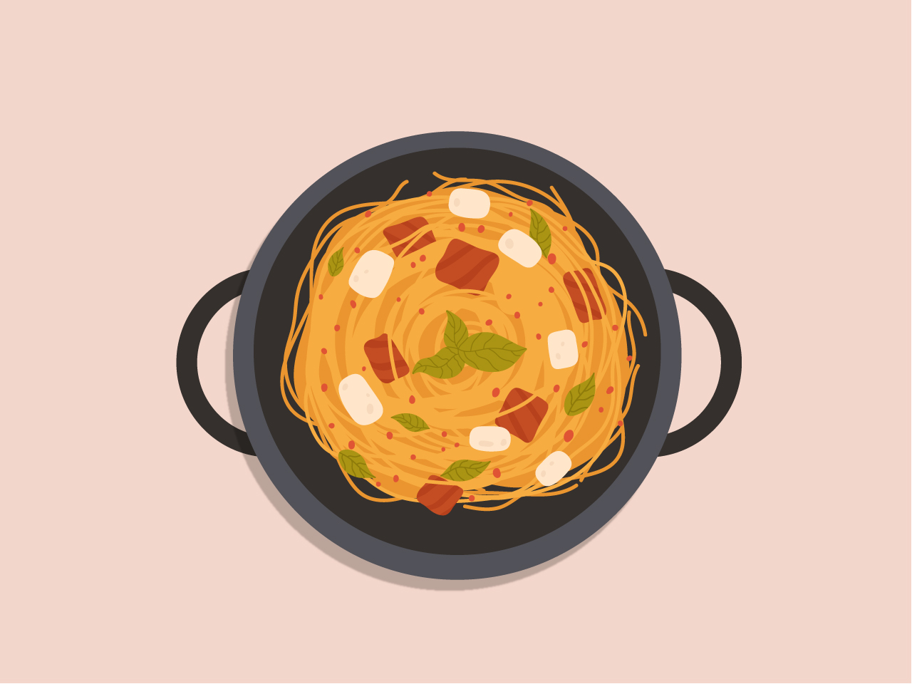

Ingredients
Method
-
Combine pasta, tomatoes, onion, garlic, red-pepper flakes, basil, oil, 2 teaspoons salt, 1/4 teaspoon pepper, and water in a large straight-sided skillet. Bring to a boil over high heat.
-
Boil mixture, stirring and turning pasta frequently with tongs, until pasta is al dente and water has nearly evaporated, about 9 minutes.
-
Season to taste with salt and pepper, divide among 4 bowls, and garnish with basil. Serve with oil and Parmesan.